Get more insights from logs
Logs as pillars of observability (together with Metrics and Traces) can provide answers to what is really happening in your infrastructure, software, and environment. Not only simple application troubleshooting.
Today, logs can contain simple contextual information like timestamps or log level but also business contexts like shopping cart value or PII of a user who triggered a transaction. Additionally, Dynatrace adds context by connecting logs to monitored entities, traces, and user sessions to provide an e2e view and enable Davis AI.
In order to start log analysis, we first need to ingest and process data. Enterprises generate hundreds of TB of log data every data. It is important to not only bring the logs to Dynatrace but also ensure configuration at scale and privacy compliance - as the starting point.
Once data is on the platform you'll see many different log formats from log4j to JSON. To add meaning to raw data we must extract attributes to cover customers' use cases like filtering, dashboarding, anomaly detection, automation, and more...
Today, you will learn how to:
- Onboard log data from files auto-detected by OneAgent
- Set log filtering to limit data transfer and focus only on Logs that matter
- Stay compliant and mask data on the source
- Write log processing rules to extract attributes from log events and use them for:
- filtering in log viewer using indexed custom attributes,
- custom metrics for dashboarding and alerting
- report problems based on events from logs
Notice
Every exercise that you do today will work on both Dynatrace Managed with Log Monitoring v2 AND Dynatrace SaaS with Log powered by Grail.
Reference materials
In the first steps of this lab you will learn how to configure log storage, filter data, and mask sensitive data.
The goal of those actions is to send logs to Dynatrace cluster in a way that gives you flexibility in log source selection. Filtering and sensitive data masking features lets you perform the transformation and more granular selection of logs before sending them to the Dynatrace cluster.
OneAgent log storage configuration
All tasks, that you'll be working on within the first part of this workshop will result in defining configurations that are stored on the Dynatrace cluster and then automatically sent to OneAgents. OneAgnets perform logs acquisition of autodetected logs and transformations on them before sending data to the Dynatrace cluster.
Settings 2.0 frameworks implementation
Log storage, data filtering configuration, and sensitive data masking are built on the basis of the Settings 2.0 framework. As a result, you'll be able to define a set of rules in three hierarchy scopes:
- Host
- Host group
- Environment
The following image illustrates rule processing priority.
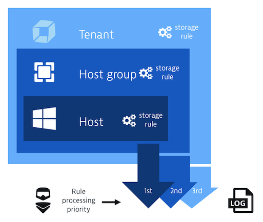
Rules are executed in the order in which they're listed, from top to bottom. Order is critical because a preceding rule may impact the log configuration that a subsequent rule uses in its definition. This means that if a mechanism discovers a rule that has matched a given log line it stops iterating the next rules.
In this lab, we will enable new Log storage and data filtering configuration.
Log storage configuration is a mechanism that lets you define which auto-detected by OneAgent log sources will be collected by Dynatrace.
Version requirements:
- Dynatrace cluster version 1.251
- OneAgent version 1.243
Enable new Log storage and data filtering
- In the Dynatrace menu go to Settings > Log Monitoring > Log sources and storage
- Expand the teaser at the top of the page by clicking Learn more and update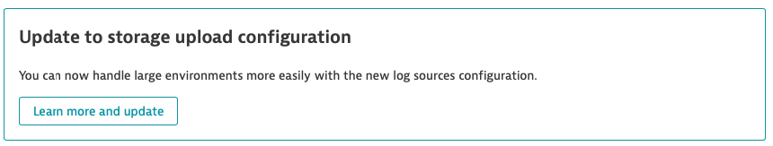
- Check if all conditions are met
Prerequisites met: 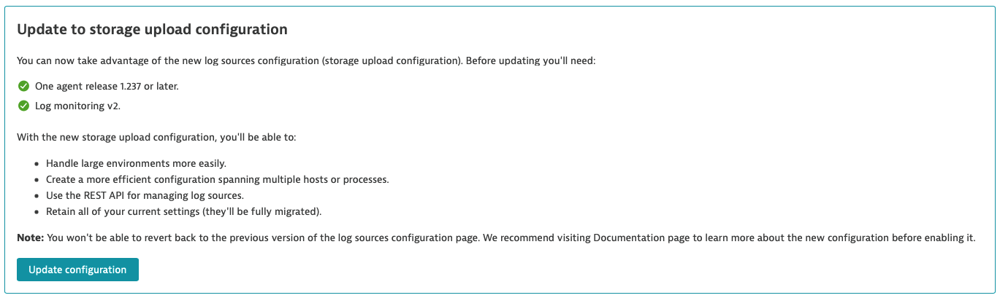
Prerequisites not met:
In case prerequisites are not met, you'll get an appropriate message with the reasons explained. You would still be able to update the configuration. It would be useful if the customer is aware of the consequences and still wants to use new configurations. For example, if a small number of OneAgents with older versions run in testing environments. 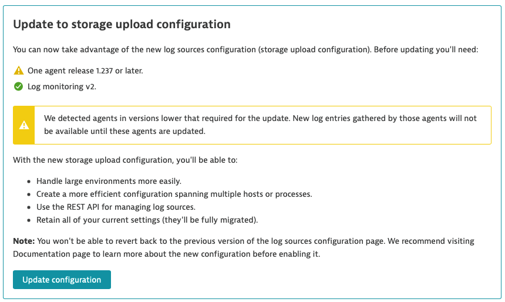
- Click Update configuration at the bottom of the teaser
- At this point you should be able to see the new Log storage configuration screen.
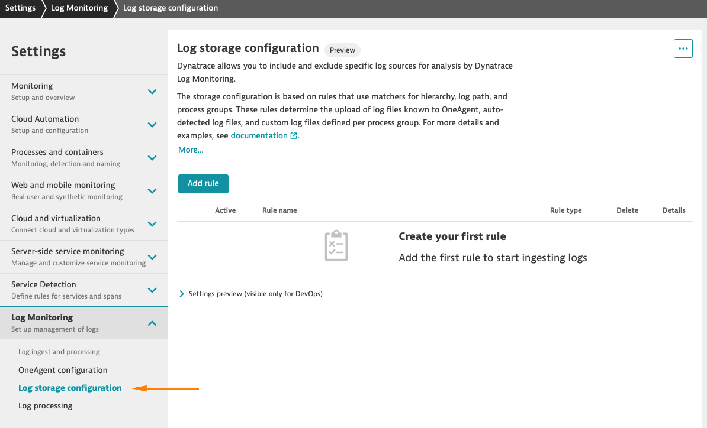
Note:
If log storage rules would have been defined before updating configuration they will be converted.
- Rule configured on Process group level would be converted to environment scope rules.
- Rule configured on the host level would be converted to host scope rules.
In this lab, we will be configuring log storage of auto-detected Kubernetes logs.
At this point, no logs are collected. Log viewer shows an empty list. You can check this by navigating from the Dynatrace menu to Observe and explore > Logs
Creating rules for k8s deployments
Let's work on the use case where we want to include logs for chosen k8s deployments from the online shop and we want to exclude logs generated by health service.
In the Dynatrace menu go to Settings > Log Monitoring > Log sources and storage to view log storage rules that are in effect. If you work in a freshly created environment list of rules is empty. You may also need to enable the new log storage configuration first. You can reorder the existing rules, and create new rules here.
Let's upload logs for k8s frontend-* and paymentservice-* deployments.
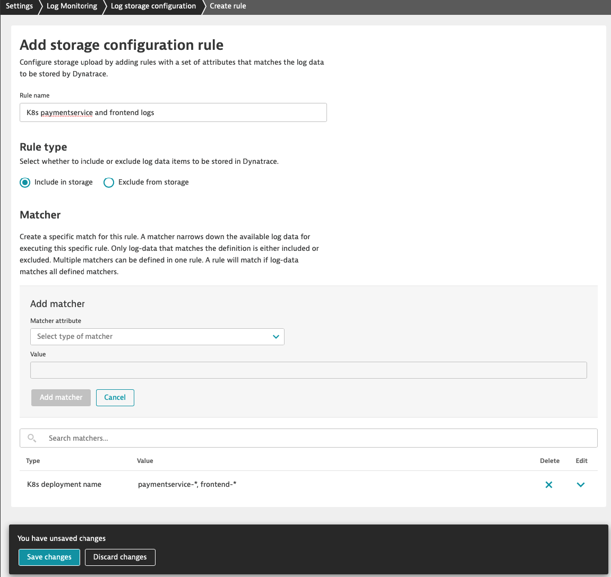 You need to submit matcher configurations with Add matcher before saving changes to the rule with Save changes button.
Configure k8s deployment ‘frontend-*' and ‘paymentservice-*' logs acquisition at the environment scope
- In the Dynatrace menu, go to Settings > Log Monitoring > Log storage configuration and click on Add rule button
- Fill out the form
- Insert name
- Select rule type Include in storage
- Click Add matcher
- From the Matcher attribute dropdown select K8s deployment name
- Copy frontend-* and paste in Value field and click on the "drop down" to select it
- Copy paymentservice-* and paste in Value field and click on the "drop down" to select it
- Confirm inserted value and click Add matcher
- Click Save changes at the bottom of the screen
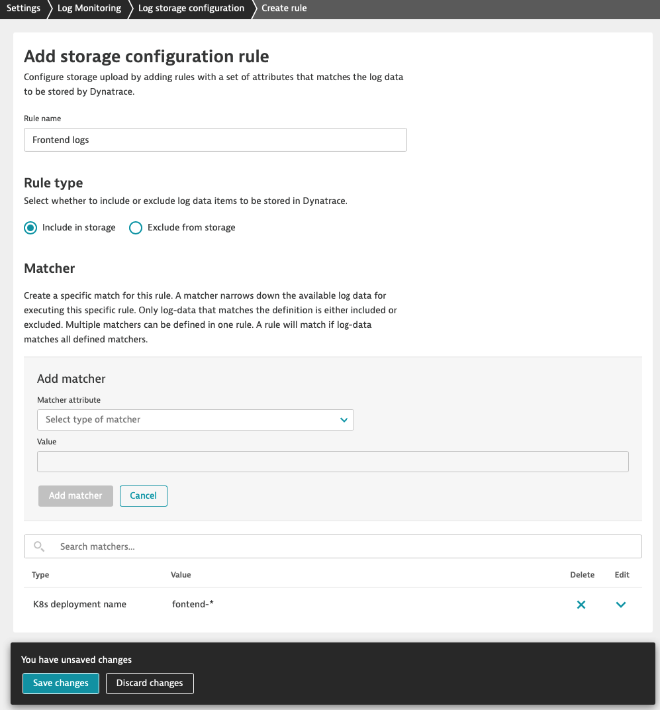
Note:
- There is OR relation between values of the matcher
- There is AND relation between matchers inside the rule
Excluding logs with log storage configuration rule
Now, we want to exclude health logs on environment scope (e.g. because of cost control reasons). Please note that this time we choose Exclude from storage rule type.
You need to submit matcher configurations with Add matcher before saving changes to the rule.
- In the Dynatrace menu, go to Settings > Log Monitoring > Log storage configuration and click on Add rule button
- Fill out the form
- Insert name
- Select rule type Exclude from storage
- Click Add matcher
- From the Matcher attribute dropdown select Log content
- Type in *_healthz* in Value field (* - asterisk is used as a wildcard)
- Confirm inserted value and click Add matcher
- Click Save changes at the bottom of the screen
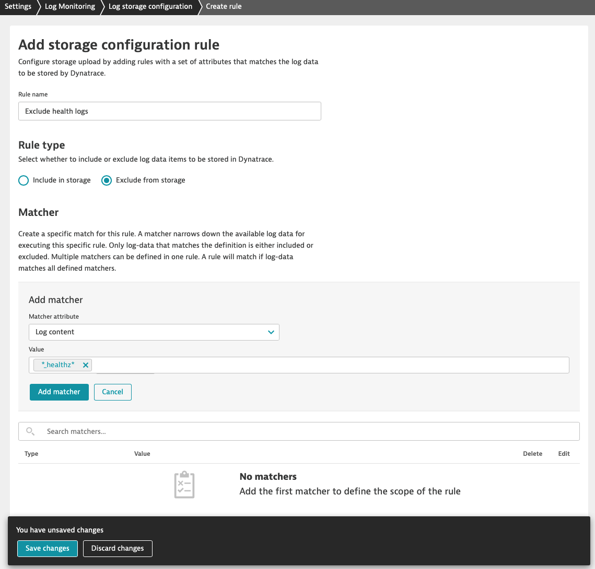
Make sure that ‘Exclude from storage' rule type is first on the list.
Rules that have a higher position on the list take precedence over those placed in the following positions. This means that if a mechanism discovers a rule that has matched a given log line it stops iterating the next rules. For this reason, excluded from storage rule type in our example needs to be first on our list.
Rules that have a higher position on the list take precedence over those placed in the following positions. This means that if a mechanism discovers a rule that has matched a given log line it stops iterating the next rules. For this reason, excluded from storage rule type in our example needs to be first on the list.
You can preview created rules on the list 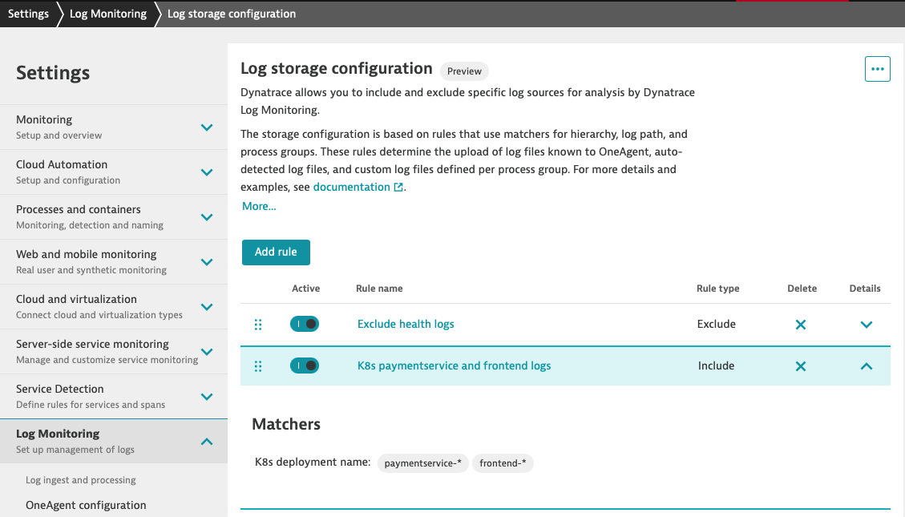
At this point, logs containing keyword ‘_healthz' will not be sent do Dynatrace cluster.
Congratulations :) You have created your first log storage configuration rule. In a moment the rule will be propagated to OneAgents and you'll be able to explore logs collected by OneAgent.
In the Dynatrace menu go to Observe and explore > Logs to check the effects.
The frequent use case is masking credit card numbers. In the log viewer, we can observe that logs contain strings like this one ‘credit_card_number":"4432-8015-6152-0454' and we want to anonymise it by replacing it with a string.
In the Dynatrace menu go to Settings > Log Monitoring > Sensitive data masking.
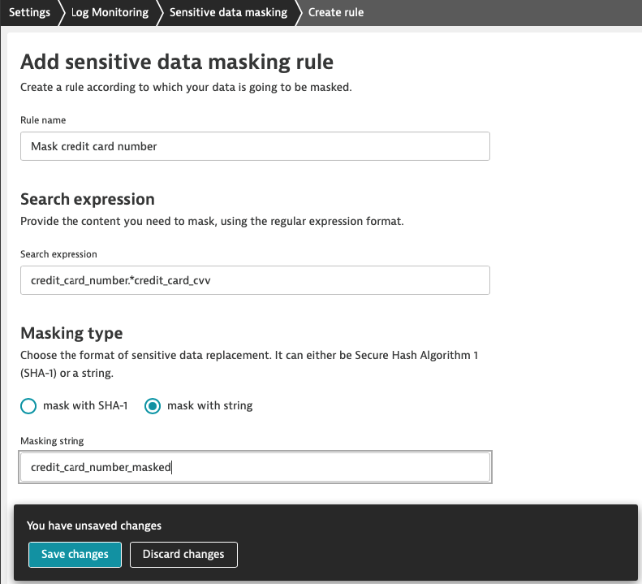
After around 3 minutes you will see the effects of masking in log viewer. In the following example image, you can see a moment when sensitive data started to be masked.
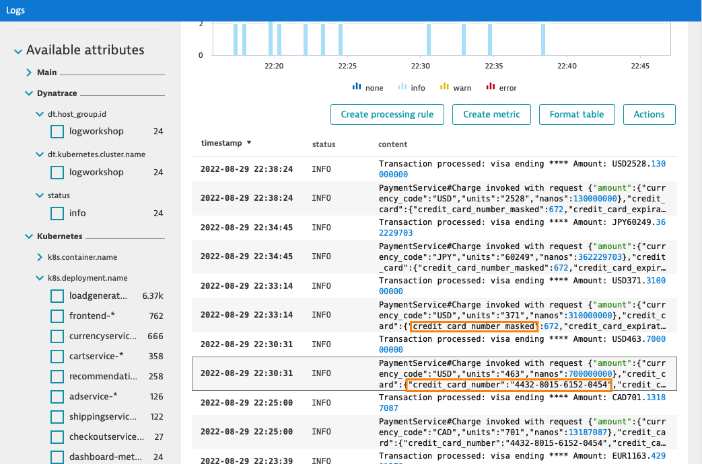
Reference materials
- Log storage configuration https://www.dynatrace.com/support/help/how-to-use-dynatrace/log-monitoring/log-monitoring-configuration/log-storage
- Sensitive data masking https://www.dynatrace.com/support/help/how-to-use-dynatrace/log-monitoring/log-monitoring-configuration/sensitive-data-masking
- Additional reference: https://dynatrace.sharepoint.com/sites/Infrastructuresolution/SitePages/How-to-take-part-in-new-Log-Storage-Configuration-&-Masking-Preview.aspx
In this introduction you will learn more about why do we process logs.
Why do we need attributes from logs?
Information can be logged in a very wide variety of formats depending on the application or process, operating system or other factors. Extracting attributes from logs bring meaning to data and helps with troubleshooting, analysis and allows for automation.
Example use cases enabled by log processing:
- unification of log formats among multiple microservices (userId attribute present in many services)
- faster filtering on indexed data
- additional dimensions for metrics that can be later used for automation
- content manipulation: masking, replacing, categorization
Introduction to Log processing
In the Dynatrace menu, go to Settings > Log Monitoring > Log processing to view log processing rules that are in effect, reorder the existing rules, and create new rules. Rules are executed in the order in which they're listed, from top to bottom. This order is critical because a preceding rule may impact the log data that a subsequent rule uses in its definition.
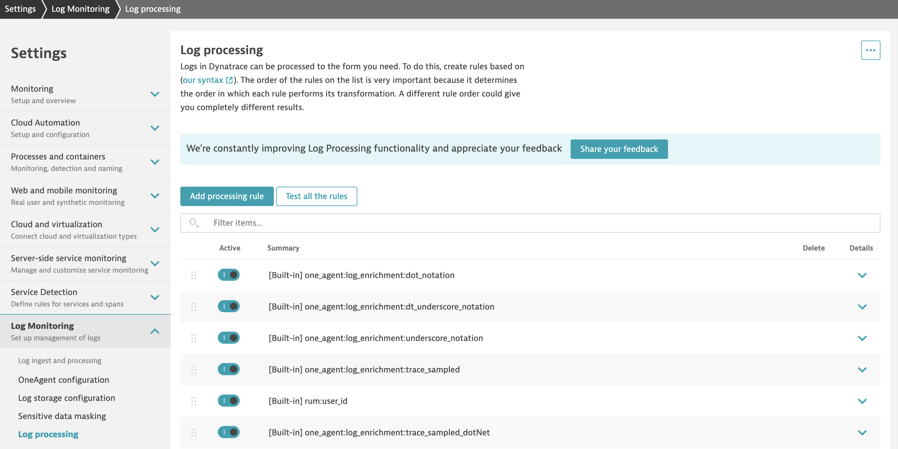
Example of attributes extraction from payment-service
In this lab you will use an onlineshop as sample application. Onlineshop runs a payment-service which writes logs in JSON format.
{
"severity": "info",
"time": 1661408972959,
"pid": 1,
"hostname": "paymentservice-7dd8c8d7bf-892rf",
"name": "paymentservice-charge",
"message": "Transaction processed: visa ending 0454 Amount: CAD111.1114552",
"v": 1
}
For us it's important to:
- identify most popular currencies for credit card processor
- summarize daily total transactions per currency
- mask credit card endings
To achieve it we need to write a Processer rule definition that
- parses JSON like in this example
- extracts credit card processor, currency and amount
- masks ending
USING(INOUT content) |
PARSE(content, "JSON{STRING:message}(flat=true)") |
FIELDS_ADD(message: REPLACE_PATTERN(message, "'ending ' INT", "ending ****")) |
PARSE(message, "'Transaction processed: ' NSPACE:card_processor ' ending ****' BLANK* 'Amount: ' UPPER:currency DOUBLE:amount") |
FIELDS_ADD(content: message) |
FIELDS_REMOVE(message)
As a result of processing your log event is enriched with extracted attributes. You can see the output of processing in log viewer.
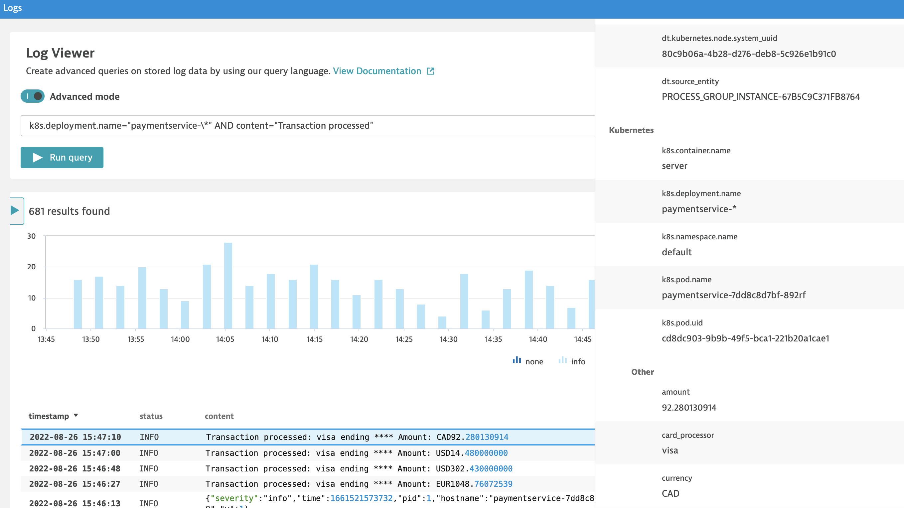
What comes next?
In the next labs you will learn how to:
- write your own processing rules
- use extracted attributes for filtering
- use log data as source for metrics
- generate events based on logs to report problems
In this lab you will extract attribute from log and use it as filter in log viewer.
Before you start
Make sure that you have logs from k8s.deployment.name = 'frontend-*' available in Log Viewer. If not configure storage under Settings > Log Monitoring > Log sources and storage
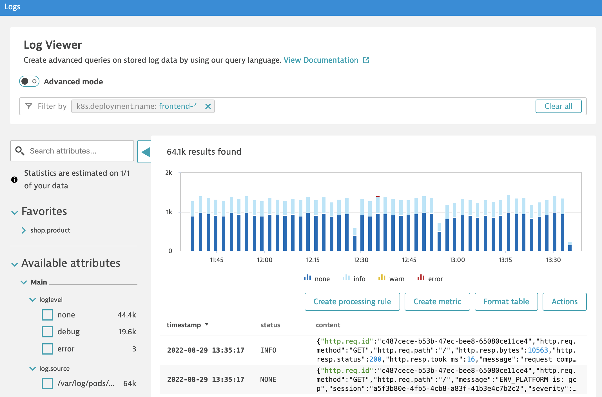
Configure log processing to extract attributes
Difficult to start? Check the example from previous section, and Reference materials at the end of this section.
- In the Dynatrace menu, go to Settings > Log Monitoring > Log processing and Add a processing rule
- set a matcher
k8s.deployment.name="frontend-\*" AND content="request complete"and download sample log
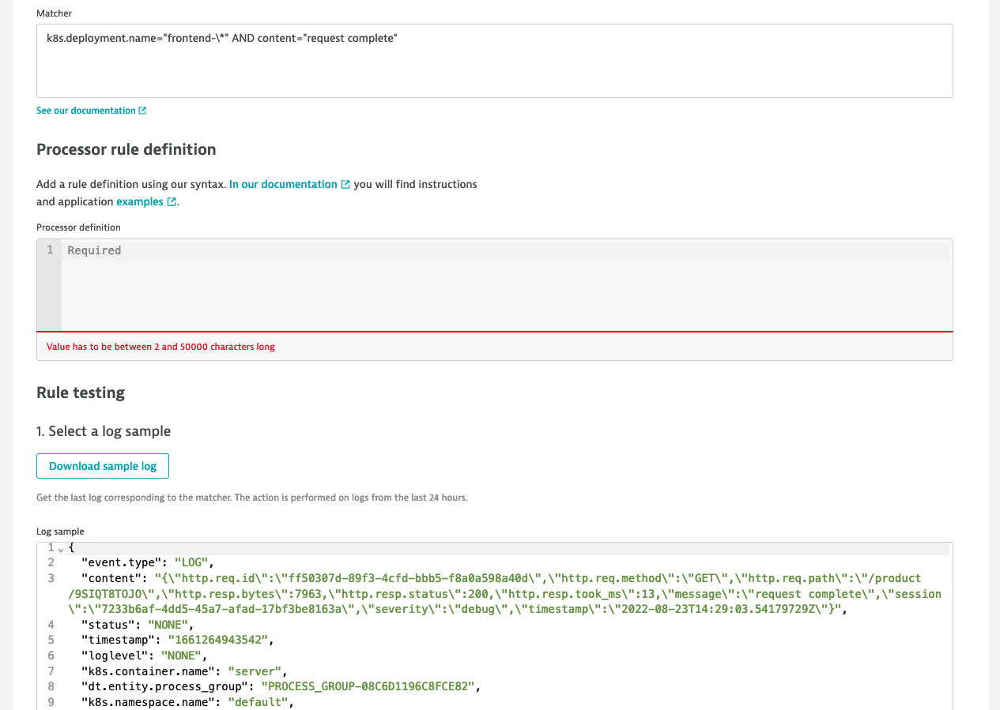
- make sure that the downloaded example has
http.req.pathstarting with/product/. If not replace the value with/product/ABCor click download sample log again - parse
contentas JSON and extracthttp.req.path - use test the rule to run the test and check the Test results, you should see
http.req.pathattribute extracted - parse
http.req.pathto extractshop.productfrom the uri and test the rule you should seeshop.productextracted
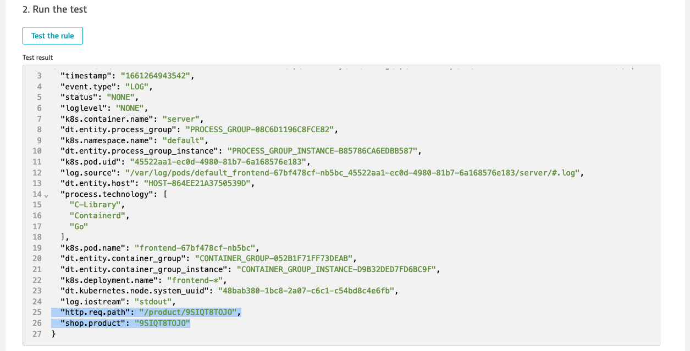
- Save changes and go to Log viewer and wait for new log lines - processing rules will apply to new lines only
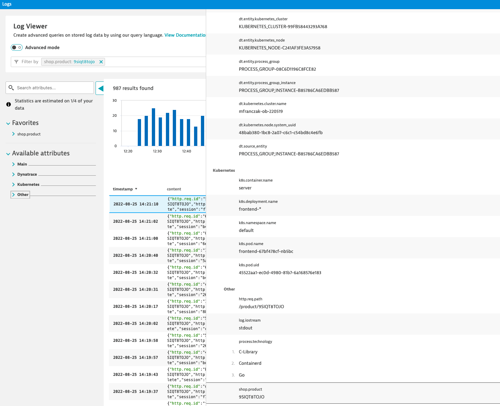
Configure log custom attribute for filtering
- to make
shop.productan attribute that can be used as filter in Log viewer you must configure Log custom attributes - In the Dynatrace menu, go to Settings > Log Monitoring > Log custom attributes
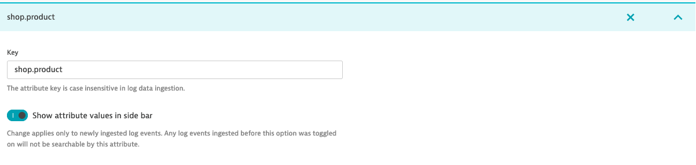
- When you go back to Log viewer you will see
shop.productunder Available attributes > Other > shop.product
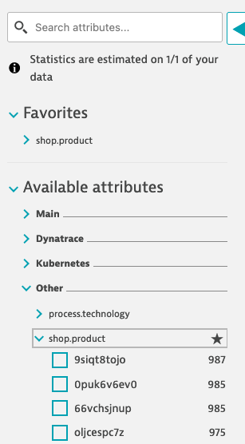
- You can use it as filter and to format table
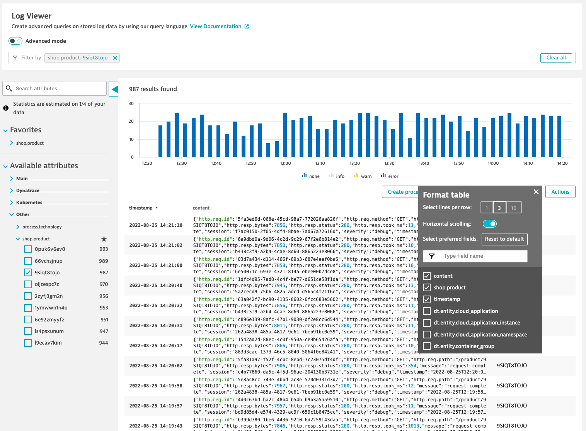
Reference materials
- Log processing example: Parse out specific fields from JSON content
- Log processing example: Multiple PARSE commands within a single processing rule
- Log processing example: Use specialized matchers
- Dynatrace Pattern Language
- Log custom attributes
In this lab you will create metric from logs to monitor average times for loading product details in an onlineshop.
Extract shop.product.time_took_ms attribute from log event
- Go to Settings > Log Monitoring > Log processing and modify previously created processing rule to extract
http.resp.took_msas INTEGER - Use
FIELDS_RENAMEand changehttp.resp.took_mstoshop.product.time_took_ms - Run the and validate the output 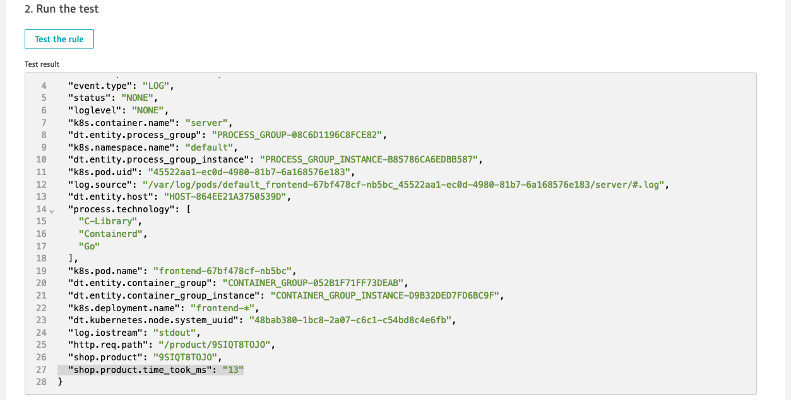
- Go to Log Viewer and validate if
shop.product.time_took_msattribute was extracted properly
Create metric
- To use extracted attribute as metric value or dimension you must create a custom attribute
- Go to Settings > Log Monitoring > Log custom attributes and create a custom attribute
shop.product.time_took_ms- do NOT enabled Show attribute values in side bar. When attribute is added you will be able to use it as value for your new metric. - use Log Viewer to find logs you processed:
k8s.deployment.name="frontend-\*" AND content="request complete" - click on Create metric and set Key
log.shop.product.time_took_ms - from Measure drop-down select Attribute value and as Attribute select
shop.product.time_took_ms - Add dimension an new
shop.productand Save changes
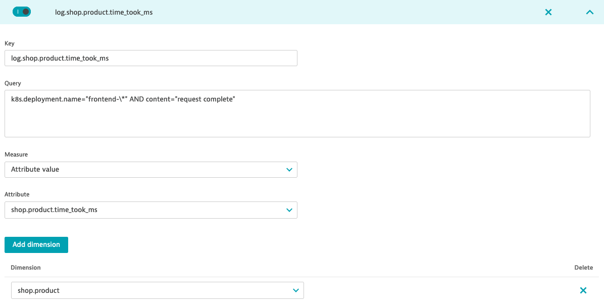
Visualize metric data
- Metric will start collecting data points once it's created - so you have to wait for the first data points.
- Go to Data explorer and search for
log.shop.product.time_took_ms - Try different visualizations like: top 10 slowest products or average time for product request to finish
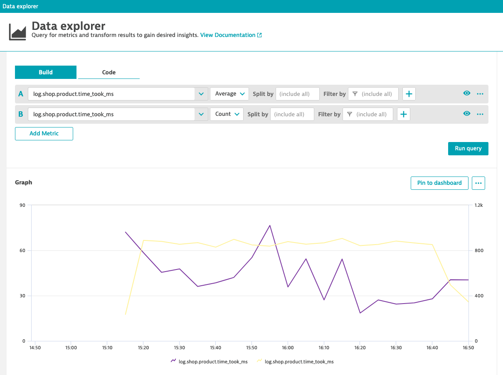
Reference materials
- Log processing example: Rename attributes
- Metrics from logs
In this lab you will use logs, metrics and events all combined to report Problems.
Before you start
Run a few request to your onlineboutique instance with uri /product/OLD. This will generate errors in logs. Check in Log Viewer that errors are ingested. You can filter by shop.product attribute you created before.

Extract status code and set log status to error
- Go to Settings > Log Monitoring > Log processing and update previously created processing rule to extract
http.resp.statusas INTEGER - Use
FIELDS_RENAMEto rename it tohttp.status_code. It is important becausehttp.status_codeis a common attribute for Dynatrace. This means there is not need to create a custom attribute. - Use
FIELDS_ADDandIFexpression to setstatusattribute toERRORifhttp.status_code >= 500elseINFO - Use
FIELDS_ADDandIFexpression to setloglevelattribute toERRORifhttp.status_code >= 500elseDEBUG - Before you test new rules adjust Log sample. Change
http.resp.statusto500
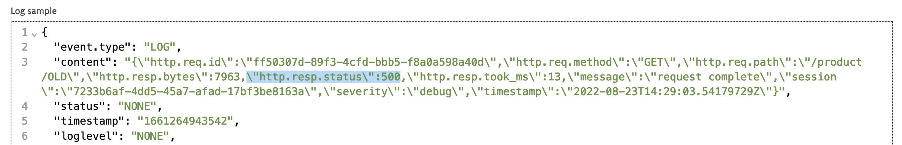
- When click Test the rule you should see
statusandloglevelset to error. 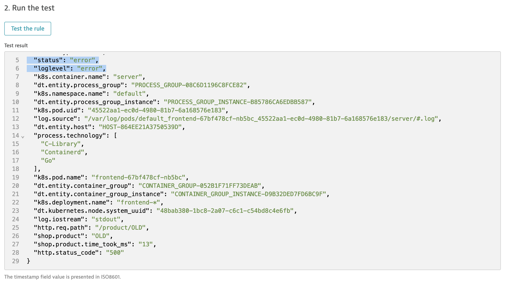 - Run a few request to your onlineboutique instance with uri /product/OLD. This will generate errors in logs.
- Go to Log Viewer and use Advanced mode query for
k8s.deployment.name="frontend-\*" AND content="product/\*" AND (status = "ERROR" OR status = "INFO")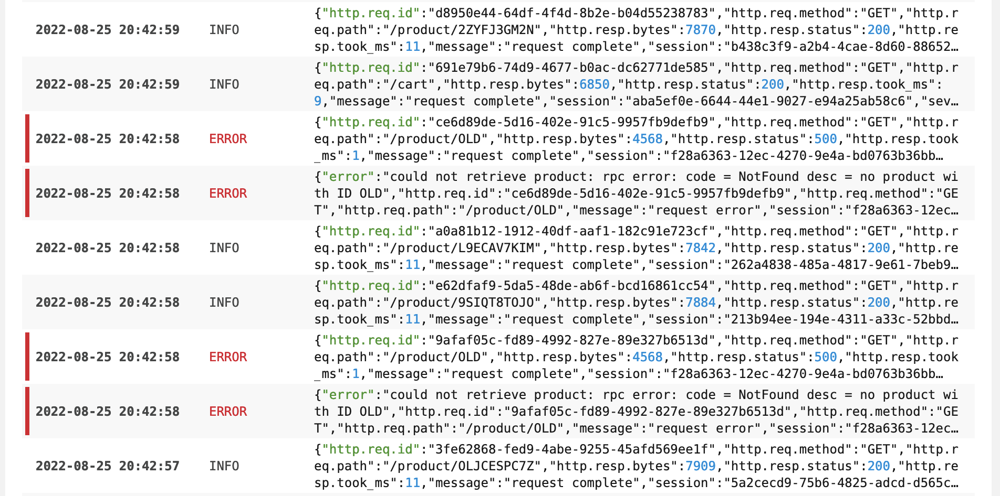
Configure Davis events from logs
- Go to Settings > Log Monitoring > Log events add a new event configuration using Add log event
- Fill in required fields including Log query you can use
k8s.deployment.name="frontend-\*" AND http.status_code="500" - From Event type drop-down select Error
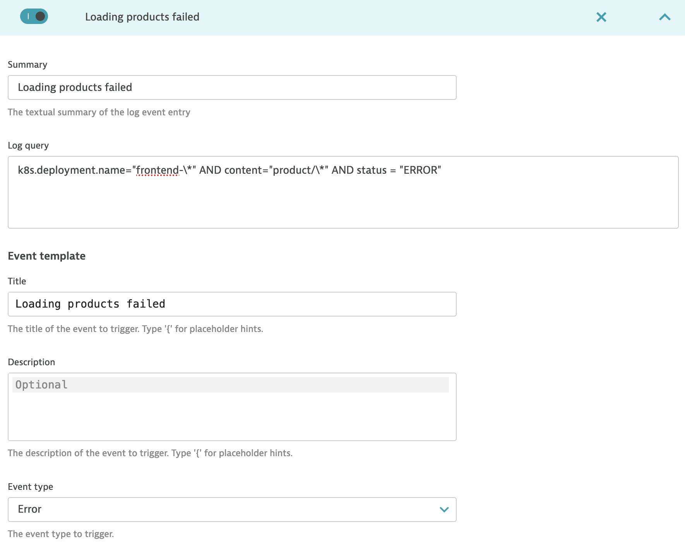
- For automation or more details you can add Properties
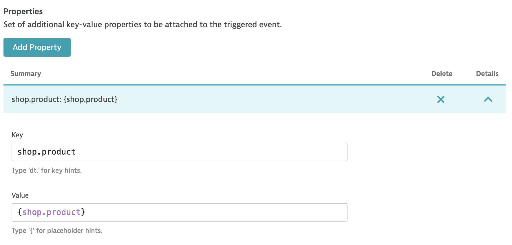
- Run a few request to your onlineboutique instance with uri /product/OLD to trigger Problem (in 1-3 minutes)
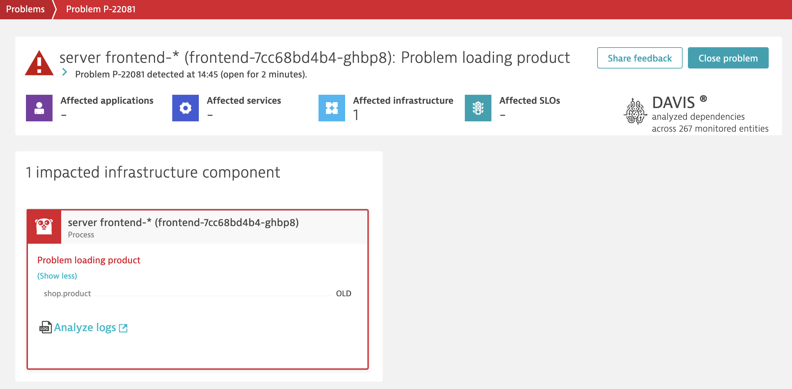
Using thresholds for anomaly detection
You can also use Custom events for alerting if you want to report a Problem depending on the thresholds. It will require you to create Log metric before.
Reference materials
- Log processing IF function
- Advanced queries for Log Viewer - this will change with Log powered by Grail and DQL!
- Log events configuration
We configured storage to ingest logs from our onlineshop and processed them to add more meaning to data using a simple processing rule, similar to this one:
PARSE(content, "JSON{
STRING:http.req.path,
INTEGER:http.resp.took_ms,
INTEGER:http.resp.status}(flat=true)"
) |
PARSE(http.req.path, "'/product/'STRING:shop.product") |
FIELDS_RENAME(
shop.product.time_took_ms: http.resp.took_ms,
http.status_code: http.resp.status
) |
FIELDS_ADD(
status: IF (http.status_code >= 500, 'ERROR', 'INFO'),
loglevel: IF (http.status_code >= 500, 'ERROR', 'DEBUG')
)
You have learned how to:
- Extract attributes using Log processing, learn more in docs
- Create custom attributes for filtering, learn more in docs
- Create metrics based on logs, learn more in docs
- Generate problems using events from Logs, learn more in docs
Everything that you learned today will work on both Dynatrace Managed and Dynatrace SaaS with Log powered by Grail.
You need help or have feedback?
- Dynatrace community
- Log monitoring documentation